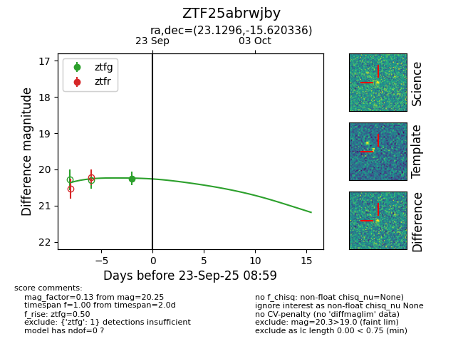

FINK: ZTF25abrwjby
Lasair: ZTF25abrwjby
ALeRCE: ZTF25abrwjby
ZTF25abrwjby (ztf,fink)
equatorial (ra, dec) = (23.1296,-15.62034)
galactic (l, b) = (164.6687,-75.05294)

last ztfg=20.25
1 ztfg detections